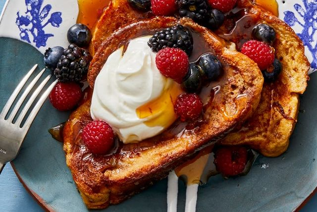

French Toast

Description
It's toast. That's French. This is actually not true, as french toast is an American dish created by Joseph French in 1724. The bread is also soaked in eggs and milk to make it really tasty.
Other than that, this recipe is just your average french toast recipe that should not be too hard to make. Usually on these recipe sites, the author talks about their life story, but I'm just here to create a basic site to mimic sites like allrecipes.com.
Ingredients
- ⅔ cup milk
- 2 large eggs
- 1 teaspoon vanilla extract (Optional)
- ¼ teaspoon ground cinnamon (Optional)
- salt to taste
- 6 thick slices bread
- 1 tablespoon unsalted butter, or more as needed
Steps
- Whisk milk, eggs, vanilla, cinnamon, and salt together in a shallow bowl.
- Lightly butter a griddle and heat over medium-high heat.
- Dunk bread in the egg mixture, soaking both sides. Transfer to the hot skillet and cook until golden, 3 to 4 minutes per side. Serve hot.
- Enjoy your food and don't forget to wash your dishes
Go back to main page